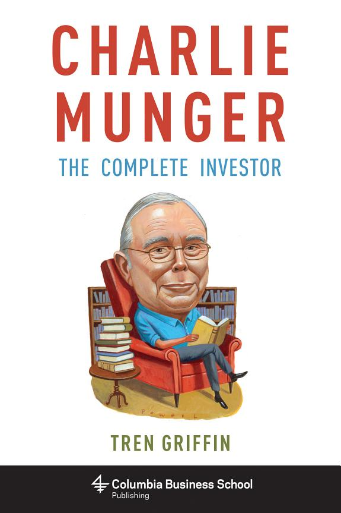

特兰·格里芬（Tren Griffin）曾在微软任职，此前是电信私募股权公司Eagle River的合伙人——该公司由无线通信企业家克雷格·麦考（Craig McCaw）创立。1994年，格里芬作为第四名员工加入卫星宽带创业公司Teledesic，这家公司后来融资超过十亿美元，估值一度超过三十亿美元。1999年至2001年，他在XO Communications出任战略副总裁，此前还在澳大利亚和韩国做过管理顾问。他撰写的博客25iq.com长期拆解贝索斯、马斯克、巴菲特等企业家与投资者的决策方式。2015年9月，Columbia Business School Publishing出版他的《Charlie Munger: The Complete Investor》，224页精装本；2017年底，中信出版社推出简体中文版《查理·芒格的原则》，黄延峰译。
与《穷查理宝典》按场合汇编演讲与信件不同，格里芬把芒格散落在采访、股东会问答、书信中的只言片语，重新组织成一套可按章节查阅的体系。全书十章：从格雷厄姆价值投资体系的基础与原则讲起，进入"世界智慧"（worldly wisdom）与"人类误判心理学"，再到芒格所说的"合适的素质"（the right stuff）、格雷厄姆体系里的七个变量、"伯克希尔数学"、"护城河"，最后一章专门比较格雷厄姆式价值投资与法玛-弗伦奇（Fama-French）因子投资的差异。书中反复出现的几个概念——能力圈、逆向思考、机会成本、激励机制——格里芬都给出了具体的定义边界，而不只是停留在口号层面。谈到人类误判心理时，他引用芒格的话：嫉妒是"你永远不可能从中获得任何乐趣的"一种情绪，用来说明这类心理弱点比智商更能决定投资结果。第一章讨论格雷厄姆体系时，格里芬还引用了芒格另一句常被引用的话："像我们这样的人之所以能获得如此大的长期优势，靠的是不断努力做到不蠢，而不是追求绝顶聪明"（原文：It's remarkable how much long-term advantage people like us have gotten by trying to be consistently not stupid, instead of trying to be very intelligent）。围绕市场有效性，格里芬转述芒格的判断：市场"在某种程度上"是有效的，但顶尖的百分之三四的投资者仍能持续跑赢——这也是主动管理这个零和游戏里，多数人扣除费用后跑输指数、少数人长期领先的原因。
案例部分是这本书区别于纯语录集的地方。讲"安全边际"时，格里芬用喜诗糖果（See's Candies）举例：糖果生意的利润集中在节日季，全年有半年财报难看，靠两个旺季把全年拉平——只看季度数字就卖出的人，会错过这门生意真正的经济性。讲"护城河"时，他把可口可乐的优势拆成三层：品牌溢价、规模带来的成本优势、全球分销网络，三者叠加才构成芒格所说的经济护城河。讲Costco时，他指出会员费本身就是一种心理机制——顾客先付费，会更倾向于去消费以证明这笔支出合理，看到别人成箱采购又会强化这种从众心理。这些例子把多学科思维模型从抽象说法落回到具体生意上。
《华尔街之路》（The Warren Buffett Way）作者罗伯特·哈格斯特罗姆（Robert Hagstrom）在推荐语中写道："Charlie Munger is, arguably, the world's best investor. His 'worldly wisdom'—a latticework of understanding separate disciplines—is a powerful way to achieve superior investment results."（查理·芒格可以说是世界上最好的投资者，他那种打通不同学科的"世界智慧"，是取得卓越投资成果的有力方法。）《伯克希尔超越巴菲特》（Berkshire Beyond Buffett）作者劳伦斯·坎宁安（Lawrence Cunningham）则评价格里芬"提供了一套优雅统一的芒格思想理论，把他散落在各个场合的只言片语组织进一个连贯的框架"（原文：Griffin offers an elegantly unified theory of Munger's ideas, organized in a coherent framework from a generous sampling of his scattered remarks in various forums）。对已经读过《穷查理宝典》、熟悉芒格式格言的读者，这本书提供的不是新的语录，而是一张把能力圈、护城河、逆向思考这些概念钉在具体决策步骤上的地图——从格雷厄姆的七个变量到伯克希尔数学，格里芬回答的始终是同一个问题：要在实际交易中用上芒格的思维方式，下一步该做什么。